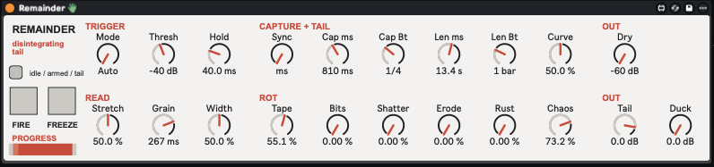

25
remainder
Gives any sound a disintegrating tail: captures the moment before it dies, then plays it back stretched, grainy and rotting — by tape, by bits, by fragmentation, by spectral erosion, by rust — until nothing is left.

about
A rolling buffer records everything. When the input falls below Thresh (or you press Fire) the last Cap window before the crossing is latched, normalised, and played back as a granular tail for Len. A progress value runs 0 → 1 over the tail and every destruction process reads it, so they all arrive at silence together. Five processes mix by amount — Tape, Bits, Shatter, Erode, Rust — and Chaos rerolls their balance on every trigger. The dry signal passes untouched (optionally ducked); the tail is added on top. Cut on retrigger; Freeze suspends a tail mid-rot.
- type
- audio effect
- built by
- claude
- state
- v1.1
- folder
- Remainder Device
quick start
- 01Drop
Remainder.amxdon a track with clear note endings — a plucked synth, piano, a vocal phrase. - 02Play a note and let it stop. The light goes green while the note plays (armed), then red-orange as the tail runs and the bar fills.
- 03Set Stretch 0 for a looping tape-loop tail or 100 to smear the capture once across the whole tail; Len 8–10 s shows the rot best.
- 04Raise one ROT dial at a time to learn its flavour, then stack them. Add Chaos so no two tails come out alike.
- 05Fire grabs a capture on demand (any mode); Freeze holds the tail where it is — grains keep spawning, so it becomes a frozen texture.
controls
trigger
- ModeAuto / Manual
- Auto fires from the level; Manual only from Fire (Fire also works in Auto).
- Thresh-70 - 0 dB
- Level the input must fall below. Re-arms only once the input rises 6 dB above it, so decaying notes and tremolo don't re-fire.
- Hold5 - 500 ms
- How long the level must stay below Thresh before firing. The capture ends at the crossing, not the fire, so Hold never eats the capture.
- Firebutton
- Momentary: capture and start a tail now. Cuts a running tail (7 ms fade).
capture + tail
- Syncms / Beats
- Which pair of lengths is used: Cap ms + Len ms, or Cap Beats + Len Beats (bar = 4 beats).
- Cap ms / Cap Beats10 ms - 8 s · 1/16 - 4 bars
- How much audio before the crossing is captured. It is peak-normalised to -3 dB (up to +40 dB makeup), so the quiet tail-end of a note comes back at full level.
- Len ms / Len Beats100 ms - 60 s · 1/4 - 32 bars
- How long the tail runs. Everything reaches silence exactly here.
- Curve0 - 100
- Collapse shape: 0 falls away fast, 50 is an S-curve, 100 holds then falls.
read
- Stretch0 - 100
- 0 loops the capture at pitch; 100 scans it exactly once over the tail. Pitch never changes with Stretch.
- Grain5 - 500 ms
- Grain length (50 % overlap, ±half a grain of position jitter).
- Width0 - 100
- Random per-grain stereo spread.
rot — each dial is an amount, scaled by progress so it starts subtle and ends total
- Tape0 - 100
- Analogue: hiss swells, wow and flutter deepen, a low-pass closes 18 kHz → 250 Hz, saturation drives to 8×, dropouts appear and are printed back into the capture (each loop pass more gutted than the last), and from 35 % of the tail the speed droops towards a tape-stop (a full stop at 100).
- Bits0 - 100
- Digital: sample rate falls to 1/48 of the session rate, bit depth from 16 bits to about 1.5, random bit-flip spikes, and stutter loops that seize 5–40 ms and repeat it 2–8 times.
- Shatter0 - 100
- Fragmentation: grains shrink to 2 % of Grain, gaps grow to ~300 ms and go irregular, fragments come from anywhere in the capture at random level and up to half play backwards, until only sparse shards remain.
- Erode0 - 100
- Spectral: each frequency bin has a fixed threshold; once the erosion passes it the bin is gone for good, so holes open and never heal; a flickering share drops per frame and survivors smear across frames — a thin whistle, then nothing. Adds 85 ms of latency to the tail only.
- Rust0 - 100
- Resonance: four inharmonic bar-like resonators (base pitch random per trigger) ring the tail, Q rising 2 → 40 and tunings drifting up to ±30 %, while the plain tail recedes.
- Chaos0 - 100
- Every trigger rolls new random numbers; Chaos sets how far they bend things: each Rot amount ±80 %, processes left at 0 can sneak in (up to 50 %, about half the time), Curve and Stretch ±40, Grain up to 4× either way. Dials stay live; 0 is exactly the dials.
out
- Tail-60 - +12 dB
- Tail level.
- Duck0 - 24 dB
- Dips the dry by up to this much while a tail plays.
- Dry-60 - 0 dB
- Dry level outright. -60 dB is a true mute — tails only.
- Freezebutton
- Holds progress and the playhead; grains keep spawning at the frozen position.
push 3
encoders read left to right. slots marked “–” are intentionally empty.
Banks are baked into the device, so they are right on a fresh add, a set load and a reconnect alike.
workflow
learn one process at a time
Tape 0 and everything else 0 is the plain granular tail — you should clearly hear the note's pitch. Then one Rot dial at 100, Len 8–10 s, Stretch 0, and listen to it fall apart pass by pass.
chaos on a single process
Tape 40, Chaos 100, then play the same note five times: every tail is different, and other processes creep in uninvited. That is the 'interesting, random, unpredictable' release the device was built for.
beats mode
Sync = Beats with Cap 1 bar and Len 8 bars turns the last bar of a phrase into a tail that dies exactly on the downbeat two phrases later.
gotchas
- Nothing happens until the input has risen 6 dB above Thresh and then fallen below it — the device arms on loud, fires on quiet. On sustained pads use Fire.
- The capture is normalised: a near-silent tail-end comes back at full level, noise floor and all. Lower Tail or raise Thresh if a quiet room is being amplified.
- Erode adds 85 ms of latency to the tail (not the dry). The tail is a free-running effect, so this is inaudible as latency, but a tail arrives fractionally later than it did before stage 4.
- Bars assume 4 beats. Capture is clamped to ~10.9 s at 48 kHz.
- Retrigger cuts: a new capture always replaces the running tail. There is no layering by design.
rebuilding
python3 build_remainder.py in the device folder regenerates Remainder.amxd (and .maxpat / .genexpr mirrors); python3 sim_remainder.py runs the 13-suite engine model.
No external files, so no freeze step ever. gen~ Data ≈ 14.7 MB.
Engine: capture ring → 64-samples/sample copy into a latched segment → 8-voice grain pool (Shatter) → normalise → Bits → Rust → Tape → collapse envelope → out 5/6 → patcher-level fft~/ifft~ WOLA chain (Erode, per-bin gen~) → summed with the dry.
Lessons: e is Euler's constant in genexpr (silent no-op on assignment) — never use single-letter names; anything that captures 'just before it went quiet' must normalise the capture.